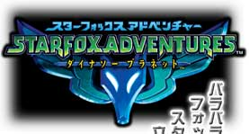
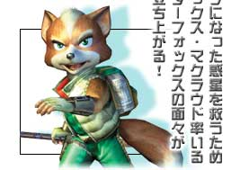
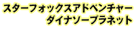
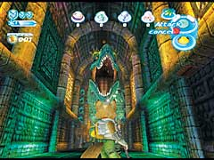
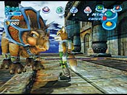
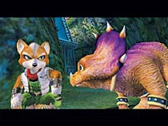
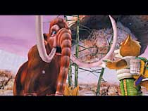
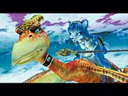
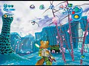

■
ジャンル：アクションアドベンチャー
■
発売予定日：2002年2月
■
希望小売価格：未定
■
プレイ人数：1人専用
■
対応周辺機器及び付加機能：振動対応

愛機アーウィンを降りたフォックスは、軽やかに動きまわる戦士だった！なんといっても、フォックスを自由自在に動かせるのが気持ちいい。惑星中を走り回り、襲いくる恐竜を次から次へとなぎ倒して、怪しい場所は片っ端から調べていく……。舞台となる惑星・ダイナソープラネットには、凶暴な恐竜や不思議な建物がいっぱい。こういった惑星特有の生き物やシカケに楽しみながら触れて歩くうちに、ゲームの世界により深くのめり込んでいくことだろう。



▲
相棒の恐竜・トリッキーが、バトルや謎解きの手伝いをしてくれる。さらに、惑星間の移動では、おなじみのシューティングステージが展開される！
フォックスの持っている棒（クリスタルスタッフ）こそ、今回の冒険のキモ。敵を殴りつける武器、ビームを放つ飛び道具、さらにはさまざまな謎を解くカギにもなる。アイデアと使い方次第で、冒険をより楽しむための万能アイテムに早変わりするのだ。

2001 Nintendo/RARE
Rareware logo is a trademark of Rare.
サイズ：312KB／時間：5秒（QuickTime Movie）